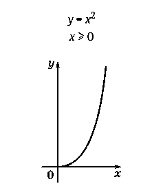
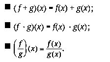
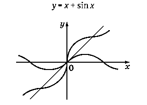
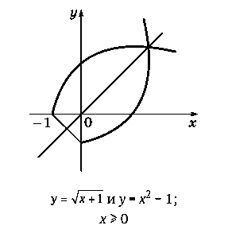
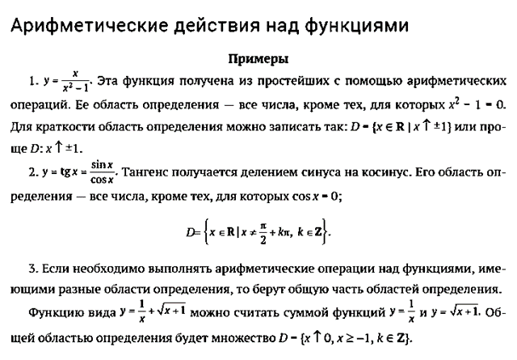
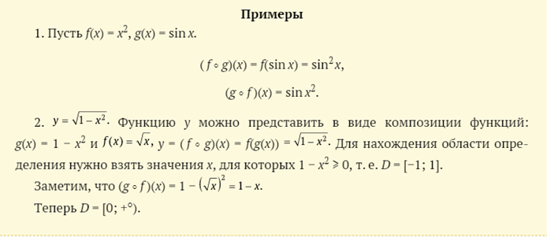
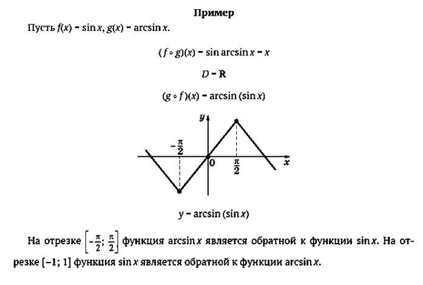
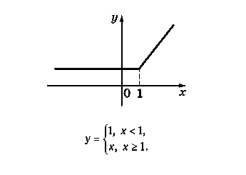
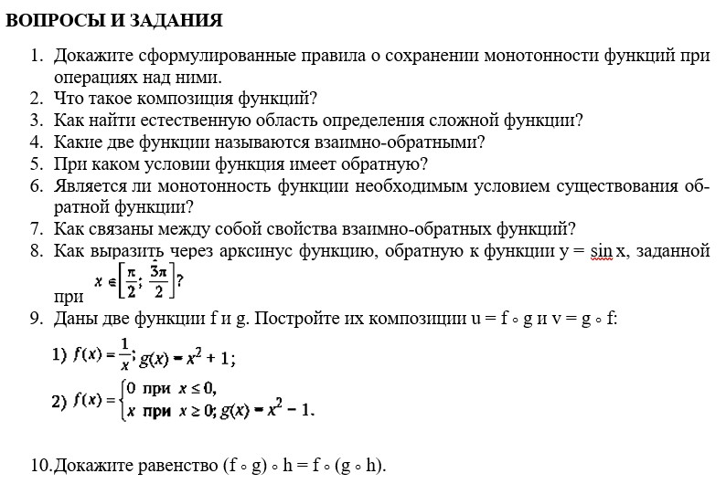

1. Уменьшение области определения функции (ограничение). У функции y = f(x) с областью определения D можно уменьшить область определения, сохранив правило вычисления ее значений.
Такая операция называется ограничением.
Так, функцию y = 𝑥^2, заданную на всей числовой оси, можно рассмотреть только для неотрицательных значений аргумента и записать y = 𝑥^2, x ≥ 0.
Если A ⊂ D, то ограничение функции f с областью определения D на подмножество A иногда обозначают так: f|A.
Ограничение функции

2.Арифметические операции над функциями.Функции с одной и той же областью определения можно складывать, перемножать и делить друг на друга по следующим правилам:

При сложении и умножении функций область определения сохраняется. При делении из нее выбрасываются точки, в которых знаменатель обращается в нуль.
Сложение функций

Взаимно-обратные функции


3. Построение сложной функции (композиции функций).
Композиция — это последовательное применение двух или нескольких функций.
Композиция функций f и g часто обозначается f o g. Она осуществляется по следующему правилу:
(f o g)(x) = f(g(x)),
т. е. к значению аргумента x сначала применяют функцию g, а затем к ее значению g(x) применяют функцию f.
Область определения композиции f o g функций f и g находят так: берут те числа x из области определения функции g, для которых значения g(x) попадают в область определения функции f.

4. Построение обратной функции. Пусть дана функция y = f(x). Если из этого равенства можно однозначно выразить x через y: (x = g(y)), то получим новую функцию, которая называется обратной к функции f. Пару функций y = f(x) и x = g(y) называют взаимно-обратными функциями. Имеют место тождества f(g(y)) = y и g(f(x)) = x.
Заметим, что зависимости y = f(x) и x = g(y) эквивалентны, выражают одну и ту же связь между переменными x и y.
Поэтому графики этих зависимостей в системе координат xOy будут совпадать.
Однако, если мы функцию g захотим записать в обычном виде y = g(x) и построить ее график в той же системе координат, то мы перейдем от точки (x; y) к точке (y; x). Точки (x; y) и (y; x) симметричны друг другу относительно прямой y = x. Поэтому графики взаимно-обратных функций y = f(x) и y = g(x) в одной и той же системе координат xOy будут симметричны относительно этой прямой.
Не для всякой функции y = f(x) можно построить обратную. Например, стандартные функции y = x2 или y = sin x не имеют обратных.
Однако для каждой из них можно так уменьшить область определения, чтобы на ней выполнялось условие однозначности решения уравнения y = f(x) при заданном значении y из области значений функции f.
Например, функция 𝑦 = √𝑥 является обратной к функции y = 𝑥^2,определеннойпри x ≥ 0; функция y = arcsin x является обратной к функции y = sin x, определеннойна промежутке 

5. Склеивание функций. Часто встречаются функции, заданные разными формулами на разных частях области определения. Их можно представлять составленными (склеенными) из различных функций. Например, функция y = |x| склеена из функции y = x, взятой при x ≥ 0 и y = −x при x < 0.
Замечание. Часто функции, получаемые из простейших стандартных функций с помощью рассмотренных выше операций, называют элементарными функциями.
Склеивание функций

